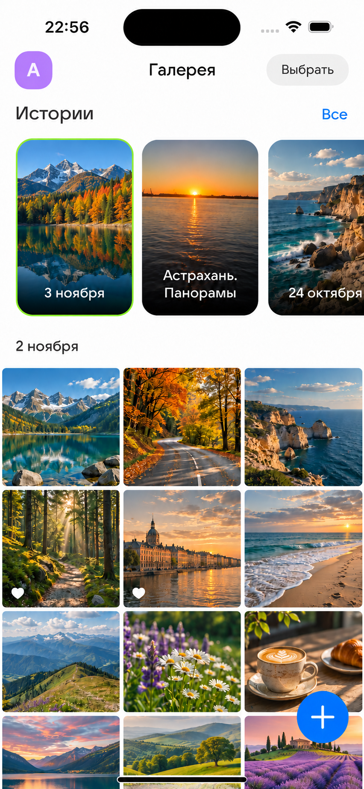

Ваши фото.
Ваши видео.
Открывайте фотографии и видео в галерее Тучки. Возвращайтесь к нужным кадрам и просматривайте материалы на iPhone.
ПРОСМОТР ФОТО И ВИДЕОТУЧКА ДЛЯ БИЗНЕСА
Галерея и автозагрузка для фотографий и видео вашей команды. Смотрите материалы в Тучке и загружайте новые снимки с iPhone автоматически.
Познакомиться с ТучкойРабочие фото и видео. Ваш привычный iPhone.
Фото и видео — в одном месте
01 / В ТЕКУЩЕЙ ВЕРСИИ
Две главные возможности:
галерея и автозагрузка.
Открывайте фотографии и видео в галерее Тучки. Возвращайтесь к нужным кадрам и просматривайте материалы на iPhone.
ПРОСМОТР ФОТО И ВИДЕОВключите автозагрузку и разрешите доступ к фото. Тучка будет загружать фотографии и видео с устройства при подходящих условиях.
АВТОЗАГРУЗКА С iPHONEДАЛЬШЕ — БОЛЬШЕ
Эти разделы пока не входят в текущую версию Тучки.
Отдельный раздел для работы с файлами и папками.
Отдельный раздел для организации фотографий и видео.
Отдельный раздел для работы с документами.
02 / РАБОЧИЕ СЦЕНАРИИ
Фото и видео помогают сохранить
то, что важно для дела.
Снимайте ход работ на iPhone. Открывайте фотографии и видео в галерее Тучки, когда нужно вернуться к деталям.
Вернитесь к фотографиям доски, эскизам и другим визуальным материалам, которые сняли во время обсуждения.
Включите автозагрузку, чтобы новые фотографии и видео с iPhone загружались в Тучку без выбора каждого снимка вручную.
Для загрузки нужен интернет и разрешённый доступ к фото. Работа в фоне зависит от ограничений iOS и настроек устройства.
03 / В ПРИЛОЖЕНИИ
В текущей версии — фото и видео. Самостоятельные разделы «Файлы», «Альбомы» и «Документы» находятся в разработке.
01Просматривайте фото и видео в галерее
02Включайте автозагрузку с iPhone
03Управляйте доступом к фото в iOS

04 / ЕЩЁ НЕСКОЛЬКО ОТВЕТОВ
Галерея фотографий и видео и автозагрузка с iPhone. Разделы «Файлы», «Альбомы» и «Документы» находятся в разработке и пока не входят в текущую версию.
Включите её в приложении и разрешите доступ к фото в настройках iOS. Для загрузки нужно подключение к интернету; выполнение в фоне зависит от ограничений iOS и настроек устройства.
Тучка разрабатывается для iOS. Точные требования к системе и совместимым устройствам появятся на странице приложения в App Store.
Ссылка на App Store появится после публикации приложения. По вопросам использования Тучки напишите на contact-support@tuchkapp.ru.
ТУЧКА ДЛЯ ВАШЕЙ КОМАНДЫ
Есть вопросы о приложении или использовании
Тучки в компании? Напишите нам.
ДОКУМЕНТЫ И ПОМОЩЬ